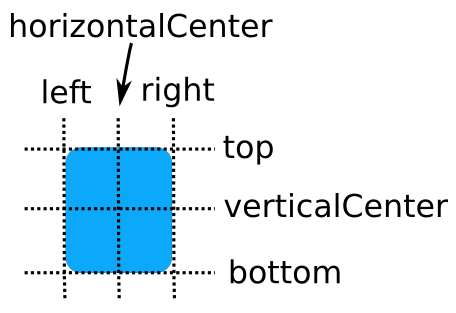

qml代码中关键字很多,涉及到的概念也很多,遇到了,这里就简单记录一下,具体的讲解可以看qt-helper
可以使用qmlscene来执行qml,显示界面样式
MouseArea :
Item :
ParallelAnimation :
SequentialAnimation :
property alias :
Anchor-Based Layout : anchors可以理解为锚,quick提供了锚定位系统。我的理解就是可以通过一些方位,比如left、top、right、bottom、verticalCenter、horizontalCenter这样的属性去描述两个控件间的位置,使用上是方便了一些。当然锚定系统也加入了边距和偏移量,否则这个系统就太简单了。边距是指控件与锚点的距离,偏移量是指verticalCenter和horizontalCenter的偏移。
需要注意的是,锚定系统和绝对位置是不能一块使用的。

qml还有专门为锚点变更制作动画的类型AnchorAnimation
------------------------------------------------------------------------------------------------
Component : 组件,封装在一个单独的qml文件中(有点像C++类),组件的文件名必须始终以大写字母开头(如Cell2.qml)。
------------------------------------------------------------------------------------------------
Property Binding : 属性绑定,简单理解就是控件的一些属性绑定了其他会变化的值,qml能在运行过程中监控值的变化并修改。但是要注意避免复杂的属性绑定,否则会出现循环绑定或者造成运行慢的问题。
qt-helper中指出,在属性绑定后进行静态数值赋值会取消属性绑定,当然还可以使用其他方法恢复。
------------------------------------------------------------------------------------------------
Signal Attributes : 大概意思和C++ qt里的信号差不多,但是要注意信号处理函数名的写法onClicked()信号名要大写
------------------------------------------------------------------------------------------------
visual parent :